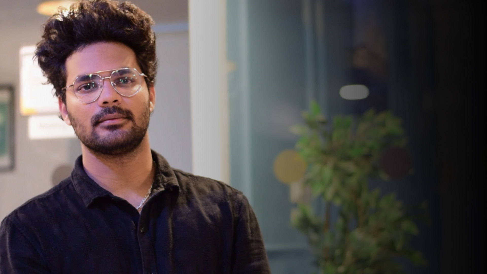

Pre-seed
$125k @ 7% & $350k uncapped SAFEExternal investors
Selected seed round funding references
- Wordware$30M raised · $150M valuation
- Slingshot AI$30M raised · $220M valuation
- Collate$30M raised · Uncapped

Ownership, capital and the next chapter of Cosmic.
Sweat equity and contribution awards.
4-year vesting · 1-year cliffApplies to all founders
| Shareholder | Sweat equity | Contribution award |
|---|---|---|
| Primary founderFounder | 40% | 11%Pre-incorporation R&D, IP and early capital contribution |
| Co-founderFounding partner | 7.5% | upto 8%@$1.79M Post Money Valuation |
| Second co-founderOptional allocation | 2.5% | —No contribution award specified |
Founders and co-founders may be subject to additional shares that recognize IP, discounted capital, pre-incorporation expenses among other notable recorded contributions.
Proposed allocations for external investors.
External investors
External investors
Series A dilution is contributed by the existing board at that time, in line with the company’s then-current ownership structure.
External investors
Data unavailable.

Data unavailable.
No documents available yet.